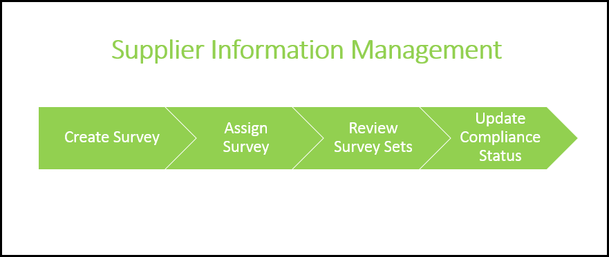
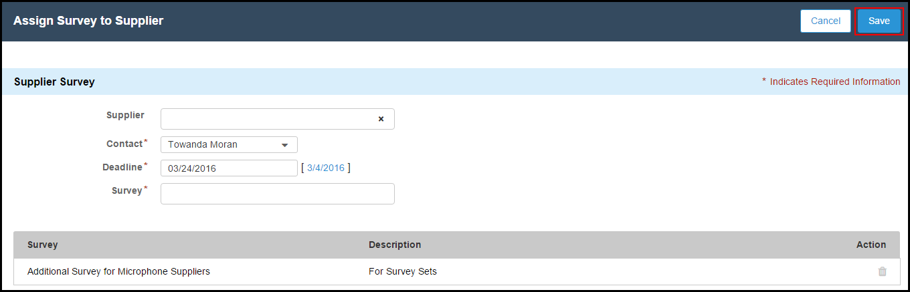

Supplier Information Management is the process of enabling and monitoring supplier engagement. Supplier Information Management enables the buyers to engage with the suppliers and evaluate them constantly using the Surveys. The compliance of suppliers is decided on basis of the surveys responded. Whereas, Supplier Information Management allows suppliers to access and submit periodic compliance surveys. After you have assigned the surveys, the suppliers will respond to the surveys. Based on results, you can update the compliance status of the suppliers. You will receive notifications if any supplier respond to a survey. The following image displays the phases of Supplier Information Management.

Supplier Information Management consists of the following phases.
In order to check the compliance of the suppliers, you can create configurable surveys as per your requirements and then send it to the suppliers. After you have created surveys, you can assign the survey to a specific group of suppliers using the Supplier Group. The suppliers will then respond to the surveys that you have assigned. After you receive the responses, you can access the responses of the surveys. Once you review the surveys, you can then update the Compliance Status of the suppliers.
Benefits of Supplier Information Management:
Segment and rank the suppliers using Supplier Groups.
Collaborate with suppliers.
Improve internal processes.
Reduce the process costing.
Reduce the overall risk.
Ability to detect problems at an early stage.
Increased efficiency and productivity of your organization.
Tip:
Use Case
In our example, Sam will now assign compliance surveys to the approved suppliers. Sam assigns the Additional Surveys for Microphone Suppliers to the Microphone Supplier Group. After the suppliers have responded to the surveys, Sam reviews the survey set responses and updates the Compliance Status accordingly.
To assign a survey
Click the Accounts tab, select the account that you want to assign surveys to. Under the Surveys related list, click New Survey. -or-
In the Supplier text box, type in the name of supplier to whom you want to assign the survey to.
The Contact picklist will display the primary contact. If you want to assign the survey to a different contact, select the relevant contact person from the Contacts picklist menu.
Click the DeadLine text box, select the date that you want to set as a deadline for the supplier to respond.
In the Surveys text box, type in the name of the survey that you want to assign to that supplier and press Enter key. The selected survey is displayed below.
Click the
icon to upload an attachment. -or- To delete a survey that you have added, click the icon.
In the Attachment dialog box, click Upload.
Select the file that you want to upload and click Open. The document you upload will be accessible by all your suppliers. Suppliers can not delete the documents that you upload.
Note:
Note
The attachments that you or your suppliers upload are added to Notes & Attachments related list of the respective Account or Survey.
Click Done.
Click Save to save the survey.
-or-
Click Cancel to cancel creating a survey.

To review the survey set response
Click the Accounts tab.
Select the account that you want to review the response for.
Under the Surveys related list, select the survey that you want to review.
Review the survey and click Save.
To update the compliance status of a supplier
Click the Accounts tab.
Select the account that you want to update the compliance status for.
Double-click on the Compliance Status field and select the appropriate compliance status for the supplier. The available options are.
Compliance Status
Description
Pending
Select this status if supplier compliance status is pending. This is the default compliance status.
Compliant
Select this status if supplier is compliant to be a part of your suppliers' list.
Non-compliant
Select this status if supplier is not compliant.
Expired
Select this status if supplier compliance has expired.

 icon.
icon.